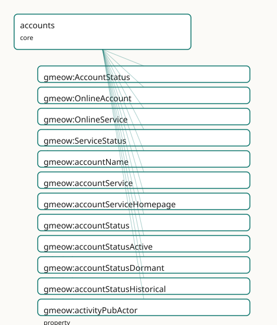

GMEOW Accounts Module
- IRI: https://blackcatinformatics.ca/gmeow/slices/accounts
- Tier: core
Group: core
What This Slice Covers
This slice owns 19 terms and contributes 11 mapping or projection rows. Use it when its terms match the native fact you want to preserve; use the linkage tables to see how those facts leave GMEOW for consumer vocabularies.
Dependencies
Consumers
- Online accounts for the mail corpus, email delivery, and finance.
Local Map

Examples
Online Presence
- Source:
slices/core/accounts/examples/online-presence.ttl - GMEOW terms:
gmeow:OnlineAccount,gmeow:OnlineService,gmeow:Person,gmeow:accountName,gmeow:accountService,gmeow:accountServiceHomepage,gmeow:accountStatus,gmeow:accountStatusActive,gmeow:accountStatusHistorical,gmeow:activityPubActor - External prefixes:
xsd
# SPDX-FileCopyrightText: 2026 Blackcat Informatics® Inc. <paudley@blackcatinformatics.ca>
# SPDX-License-Identifier: CC-BY-4.0
#
# Worked example: online accounts, decentralized identity, and P10 . An
# agent gmeow:holdsAccount one or more gmeow:OnlineAccounts, each on a
# gmeow:OnlineService. Decentralized identities are first-class: a Mastodon
# account carries its gmeow:activityPubActor URI, a Nostr account its
# gmeow:nostrPubkey and gmeow:nip05 handle. P10 (suppression, never deletion):
# when a service shuts down, its account is kept as gmeow:accountStatusHistorical
# — the record persists, it is not erased.
@prefix gmeow: <https://blackcatinformatics.ca/gmeow/> .
@prefix ex: <https://blackcatinformatics.ca/gmeow/examples/accounts/> .
@prefix xsd: <http://www.w3.org/2001/XMLSchema#> .
ex:dana a gmeow:Person ;
gmeow:name "Dana Reyes"@en ;
gmeow:holdsAccount ex:fediAccount , ex:nostrAccount , ex:oldAccount .
# --- A live service and a fediverse (ActivityPub) account on it.
ex:mastodon a gmeow:OnlineService ;
gmeow:name "mastodon.social"@en ;
gmeow:serviceStatus gmeow:serviceStatusLive .
ex:fediAccount a gmeow:OnlineAccount ;
gmeow:accountName "@dana@mastodon.social" ;
gmeow:accountService ex:mastodon ;
gmeow:accountServiceHomepage <https://mastodon.social> ;
gmeow:activityPubActor "https://mastodon.social/users/dana"^^xsd:anyURI ;
gmeow:accountStatus gmeow:accountStatusActive .
# --- A serverless Nostr identity: the key IS the account, with a NIP-05 handle.
ex:nostrAccount a gmeow:OnlineAccount ;
gmeow:accountName "dana" ;
gmeow:nostrPubkey "npub1dana0exampleexampleexampleexampleexampleexampleexa" ;
gmeow:nip05 "dana@example.org" ;
gmeow:accountStatus gmeow:accountStatusActive .
# --- P10: a shut-down service keeps its account as historical, never deleted.
ex:defunct a gmeow:OnlineService ;
gmeow:name "old.example.net"@en ;
gmeow:serviceStatus gmeow:serviceStatusShutDown ;
gmeow:serviceShutdownDate "2023-06-30T00:00:00Z"^^xsd:dateTime .
ex:oldAccount a gmeow:OnlineAccount ;
gmeow:accountName "dana_old" ;
gmeow:accountService ex:defunct ;
gmeow:accountStatus gmeow:accountStatusHistorical .
Terms
Classes
| Term | Label | Definition |
|---|---|---|
gmeow:AccountStatus |
Account Status | The usage status of an account from its holder's standpoint — a VALUE vocabulary (active, dormant, historical, …); open set. |
gmeow:OnlineAccount |
Online Account | An account an agent holds with an online service — a social profile, code-forge account, or decentralized identity. |
gmeow:OnlineService |
Online Service | An online service or platform an account is held with — a social network, code forge, email provider, or federated instance. Carries the service's liveness (gm... |
gmeow:ServiceStatus |
Service Status | The liveness status of an online service — a VALUE vocabulary (live, shut-down, …); open set. |
Properties
| Term | Label | Definition |
|---|---|---|
gmeow:accountName |
account name | The handle or user name identifying the account on its service. |
gmeow:accountService |
account service | The online service an account is held with. Functional — an account is on one service. |
gmeow:accountServiceHomepage |
account service homepage | The homepage of the service an account is held with — the foaf:accountServiceHomepage of FOAF's OnlineAccount idiom. Range open (an IRI). |
gmeow:accountStatus |
account status | The holder's usage status of an account — a gmeow:AccountStatus value (active / dormant / historical). A retired account is status 'historical' with validUntil... |
gmeow:activityPubActor |
ActivityPub actor | The ActivityPub actor IRI of a federated-social account. |
gmeow:holdsAccount |
holds account | Relates an agent to an online account it holds. |
gmeow:nip05 |
NIP-05 identifier | A Nostr NIP-05 identifier (user@domain) verifying a Nostr account against a domain. |
gmeow:nostrPubkey |
Nostr public key | The Nostr public key (npub / hex) identifying a decentralized-identity account. |
gmeow:serviceShutdownDate |
service shutdown date | The date a historical online service shut down (Yahoo 360: 2009-07-13). The flat shortcut for service liveness; projects to schema:dissolutionDate. Promote to... |
gmeow:serviceStatus |
service status | The liveness status of a service — a gmeow:ServiceStatus value (live / shut-down). |
Individuals
| Term | Label | Definition |
|---|---|---|
gmeow:accountStatusActive |
active | An account in current use. |
gmeow:accountStatusDormant |
dormant | An account retained but not actively used. |
gmeow:accountStatusHistorical |
historical | A retired account, kept for the record (P10): the holder no longer uses it. |
gmeow:serviceStatusLive |
live | The service is currently operating. |
gmeow:serviceStatusShutDown |
shut down | The service has ceased operation (its gmeow:serviceShutdownDate records when). |
Linkages
- Rows: 11
- Projection profiles:
foaf,schema-org,sioc - External vocabularies:
foaf,rdf,schema,sioc
| Source | Kind | Profile | Predicate/Relation | Target | Evidence |
|---|---|---|---|---|---|
gmeow:OnlineAccount |
equivalence | - |
owl:equivalentClass | foaf:OnlineAccount | gmeow-classes.sssom.tsv; gmeow:eqClasses013; confidence 1 |
gmeow:OnlineAccount |
equivalence | - |
rdfs:subClassOf | sioc:UserAccount | gmeow-classes.sssom.tsv; gmeow:eqClasses014; confidence 0.9 |
gmeow:accountName |
equivalence | - |
owl:equivalentProperty | foaf:accountName | gmeow-properties.sssom.tsv; gmeow:eqProperties032; confidence 1 |
gmeow:accountServiceHomepage |
equivalence | - |
skos:closeMatch | foaf:accountServiceHomepage | gmeow-properties.sssom.tsv; gmeow:eqProperties092; confidence 0.95 |
gmeow:holdsAccount |
equivalence | - |
owl:equivalentProperty | foaf:account | gmeow-properties.sssom.tsv; gmeow:eqProperties031; confidence 1 |
gmeow:accountName |
projection | foaf |
projects to / <= | foaf:OnlineAccount, foaf:account, foaf:accountName, foaf:accountServiceHomepage, rdf:type | gmeow:mapFoafAccount; confidence 0.9; lossy: decentralized-identity detail (nostr/activitypub/nip05) and account status/validity drop; FOAF carries the OnlineAccount idiom |
gmeow:accountName |
projection | sioc |
projects to / <= | sioc:name | gmeow:mapSiocName; confidence 0.85 |
gmeow:accountServiceHomepage |
projection | foaf |
projects to / <= | foaf:OnlineAccount, foaf:account, foaf:accountName, foaf:accountServiceHomepage, rdf:type | gmeow:mapFoafAccount; confidence 0.9; lossy: decentralized-identity detail (nostr/activitypub/nip05) and account status/validity drop; FOAF carries the OnlineAccount idiom |
gmeow:holdsAccount |
projection | foaf |
projects to / <= | foaf:OnlineAccount, foaf:account, foaf:accountName, foaf:accountServiceHomepage, rdf:type | gmeow:mapFoafAccount; confidence 0.9; lossy: decentralized-identity detail (nostr/activitypub/nip05) and account status/validity drop; FOAF carries the OnlineAccount idiom |
gmeow:holdsAccount |
projection | sioc |
projects to / <= | rdf:type, sioc:UserAccount, sioc:account_of | gmeow:mapSiocUserAccount; confidence 0.85; lossy: every held online account over-types as a SIOC user account |
gmeow:serviceShutdownDate |
projection | schema-org |
projects to / <= | schema:dissolutionDate | gmeow:mapSchemaServiceDissolution; confidence 0.9 |
Guide
Accounts — online accounts, centralized and decentralized, as peers
Slice:
https://blackcatinformatics.ca/gmeow/slices/accounts· tier: core The FOAFOnlineAccountsuperset plus the decentralized-identity layer: handles, Nostr keys, ActivityPub actors, and domain-verified identifiers.
FOAF gave the web foaf:OnlineAccount and then the web moved on: today an agent's online
presence spans platform accounts (a code forge, a social service) and decentralized
identities (a Nostr keypair, a federated ActivityPub actor) that have no "service provider"
in the FOAF sense. GMEOW models both in one class, as co-equal accounts (Principle 9's
co-equality stance applied to digital presence): a self-sovereign key-based identity is not
an exotic footnote to a platform handle, and a platform handle is not less real for being
custodial. There is no primary-account slot, for the same reason names has no primary name
— an agent holds many accounts via holdsAccount, and selection is the consumer's
frame, never the graph's hierarchy.
An account is an InformationObject, not the agent: the account ≠ agent distinction is
load-bearing exactly the way appellation ≠ person is in names. Accounts are claimed by
agents, get suspended, abandoned, and reused — facts about the account, not the person.
A defunct account is suppressed or time-scoped, never deleted (Principle 10): account
history is provenance for everything the mail corpus and the memory products ingest. The
slice is deliberately slim (Principle 16's small-core discipline) with named consumers —
the mail corpus, email delivery, and finance (Principle 15).
The core pair
gmeow:OnlineAccount
An account an agent holds with an online service — a social profile, a code-forge account,
or a decentralized identity. An InformationObject under kernel, so it bears the shared
machinery: external identifiers, wasAttributedTo provenance, and statement-level clocks
(validFrom/validUntil) for the holding period — flat-first, like the contacts slice's
tenures.
gmeow:holdsAccount
Agent → account. Non-functional in both directions by design: an agent holds many accounts,
and (honestly modelled) a shared or transferred account relates to more than one agent over
time — disambiguate with the statement clocks. No inference runs from an account's display
name back to the agent's identity facets: handles are address, not identity (the
seven-axis matrix's address ≠ identity tenet, applied to the digital realm).
Identifiers on the account
gmeow:accountName
The handle or user name identifying the account on its service — a service-scoped string,
meaningful only paired with the service, and never a name of the person (a person's names
are co-equal gmeow:PersonNames in the names slice; an account handle never outranks or
implies them).
gmeow:nostrPubkey
The Nostr public key (npub / hex) identifying a key-based, self-sovereign account. The key
is the account's identity on the protocol — no provider exists to ask — which is exactly
why decentralized accounts needed first-class modelling rather than a stretched FOAF
accountServiceHomepage.
gmeow:activityPubActor
The ActivityPub actor IRI of a federated-social account — a dereferenceable identity in
fediverse space. Carried as xsd:anyURI data, not conflated with the account's own GMEOW
IRI: the actor IRI is what the protocol calls the account, an alignment in the same
spirit as language's registry codes — never identity within the graph.
gmeow:nip05
A Nostr NIP-05 identifier (user@domain) verifying a Nostr account against a DNS domain —
the protocol's own claim-verification bridge. Recording it lets the trust module (keys,
certifications, owner-trust live there, not here) weigh a domain-backed account above an
unverified key without this slice ever ranking accounts itself.
ex:kit a gmeow:Person ;
gmeow:holdsAccount ex:forgeAcct , ex:nostrAcct . # co-equal
ex:forgeAcct a gmeow:OnlineAccount ;
gmeow:accountName "kit-dev" .
ex:nostrAcct a gmeow:OnlineAccount ;
gmeow:nostrPubkey "npub1examplekey…" ;
gmeow:nip05 "kit@example.ca" .
Seams, solver, and alignment
The contacts slice joins in through gmeow:deliversToAccount (an email address delivers
to an account — the seam the mail corpus walks from address book to mailbox), and finance
reaches accounts for service relationships. Key verification — checking a NIP-05 document,
resolving an ActivityPub actor, proving control of a key — is solver-layer work
(Principle 12): the graph records the identifiers and the trust module records the
attestations; nothing here computes or asserts verification outcomes. Alignment is by
reference (Principle 5): OnlineAccount/holdsAccount/accountName map to FOAF's
OnlineAccount/account/accountName, with the decentralized-identity properties as
GMEOW's canonical superset — FOAF-bound projections drop them as documented lossy drops
(Principle 4).
Dependencies
Depends only on kernel — accounts sit near the bottom of the core stack so that contacts
(deliversToAccount), the email extension, and finance can all build on them without
cycles. Consumers: the mail corpus, email delivery, and finance (Principle 15, named in the
manifest).
Online-presence history
gmeow:OnlineService · gmeow:accountService · gmeow:accountServiceHomepage · gmeow:serviceShutdownDate · gmeow:serviceStatus
The service an account is held with is a first-class gmeow:OnlineService
(gmeow:accountService, functional). Its liveness rides the flat
gmeow:serviceStatus (live / shut-down) and gmeow:serviceShutdownDate — so a
historical service (Yahoo 360, shut 2009-07-13) stays first-class with its shutdown
recorded (→ schema:dissolutionDate). gmeow:accountServiceHomepage is FOAF's
accountServiceHomepage idiom.
gmeow:AccountStatus · gmeow:accountStatus
The holder's usage status of an account — an open value vocabulary (active /
dormant / historical). A retired account is accountStatusHistorical with
validUntil in the past, retained for the record (P10), never deleted.